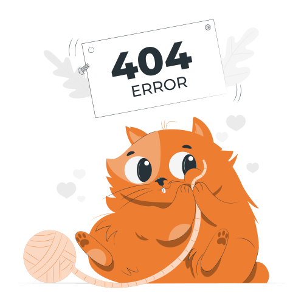

Superfox Saga
We are a local creative team who offering authentic experiences revolving around what is fresh and unique

Ooops.
We think you are lost.
Follow the button below to go back to the homepage.
Back to Home
Follow us on